Auto Upload To Google Drive
Connect your Google Drive account, it will automatically upload your recording once it’s done.
Natively Record Phone Calls (& VoIP)
Start automatically and save all your recordings locally. * Supports: Telegram, WeChat, Skype, Zoom, etc,..
Supports all iPhones
Call Recorder works on jailbroken devices running iOS 12 up to 16
Features
Auto record all calls or blocked numbers
Optionally select to auto start recording 'All Calls', 'Blocked Numbers', 'Unknown Numbers' or specific phone numbers.
Record bluetooth Phone/VoIP Calls
Even calls taken on your bluetooth headphone or car are recorded.
Protect recordings using FaceID/TouchID
Optionally prevent others from accessing the app using your FaceID/TouchID (on iPhone 6 and up) or a 4 digit passcode.
Easy Internal web access to all your recordings
Quickly access recordings from your computer using Safari or Chrome with the internal web server.
Archive & Zip Recordings
In one click you can export all your recordings in 1 zip file.
Export recordings to Email, Telegram, SMS, ..
Long clicking the record name will allow sharing the recording via Email, Telegram, SMS or any other app you have installed.
Quickly listen to recordings from inside the app
Application contains an internal player to listen to your recordings.
CallBar (Cydia tweak) support
If you have CallBar installed, it will have an added recording button inside it's phone actions panel.
Twitter online customer support
Search for @hAcx on twitter to get online support and ask questions about Call Recorder.
Activator (Cydia tweak) support
Use Activator from Cydia to quickly start/stop a recording using any gesture you want.
How to Install & Jailbreak
-
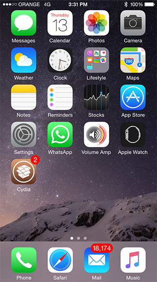1. Open 'Cydia' app (if you already have it installed, click this link)
-
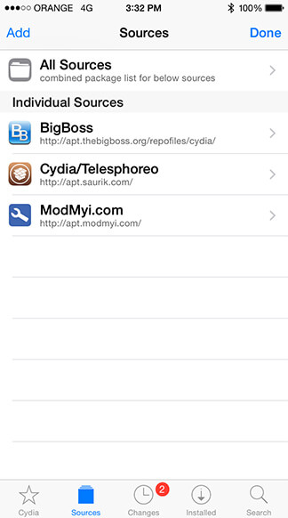2. Click 'Sources' at the bottom and than Click 'Edit'
-
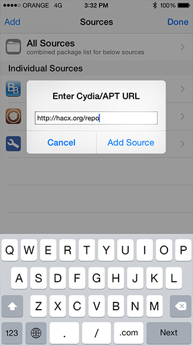
-
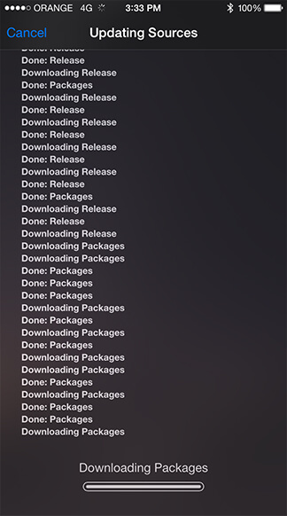4. Wait for Cydia to finish
-
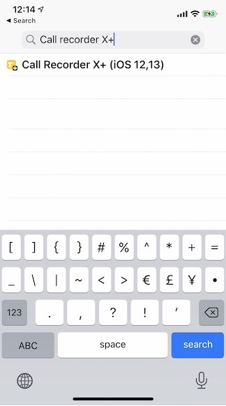5. Click 'Search' at the bottom
- Type 'Call Recorder'
- Click on 'Call Recorder X+'
-
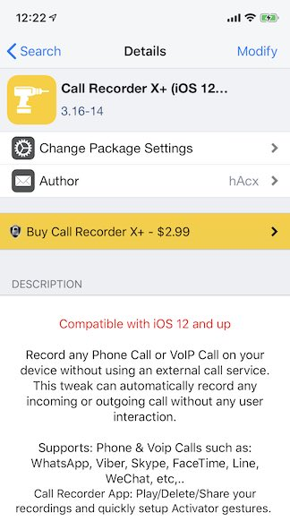6. Click 'Install'
-
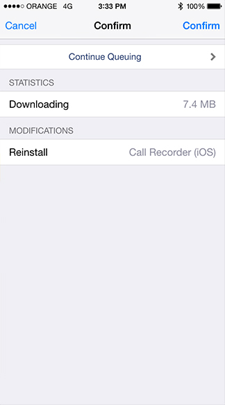7. Click 'Confirm'
7a. Wait for install to finish -
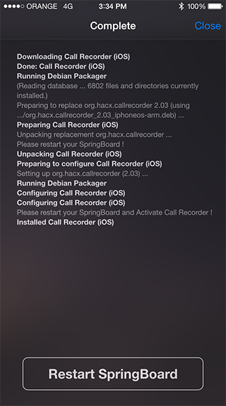8. Wait for installation to finish
8a. Click 'Restart SpringBoard' -
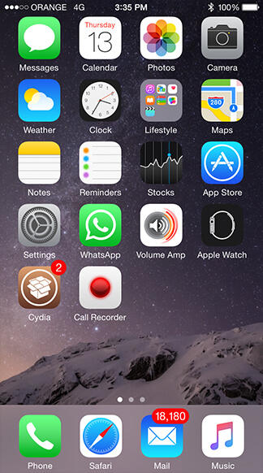9. Open 'Call Recorder X+'
-
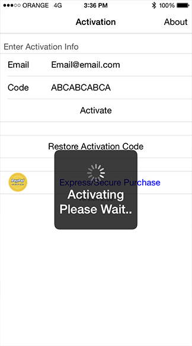10. Enter the activation code you received after purchase and Click 'Activate'
-
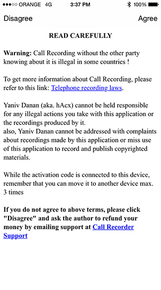11. Click 'Agree'
11a. You're Done ! -
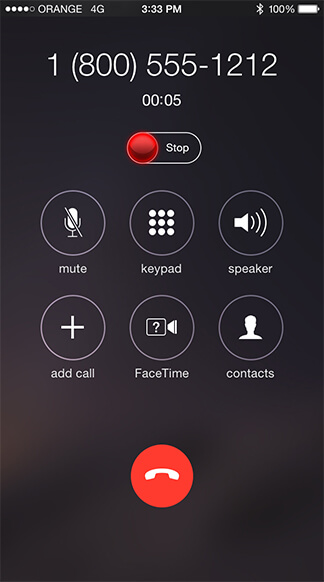The record button will now appear every time you make a Phone or VoIP call
FAQ
Here are a few FAQ to help you getting started or use the application many features. You can always use the 'Contact' form to send us an email if your question is not in this list..
-
1. How do i install the application ?
Look at the 'How To Install' page on this site.
-
2. What is Jailbreak ?
Jailbreak is a method for giving your device the ability to use such an awesome tweak. without it call recording is not possible. Look at the 'How To Install' page on this site on how to jailbreak your device.
-
3. In which cydia repository/source can i find iOS Call Recorder ?
Add - https://repo.packix.com to your cydia sources, then search for "Call Recorder (iOS)", select it and click 'Install'.
-
4. Does iOS Call Recorder requires any external service or making a conference call ?
No. The beuty of iOS Call Recorder is that it does all the recording straight on your device without using any external service (like calling a spammy call service which does the recording for you). All recordings are saved on the device natively and quickly. no hidden costs. it's a one of a kind tweak for iOS which no one has done before.
-
5. How can i automatically upload my recordings to Google Drive ?
Open the application and click the 'Settings' button in the application side bar menu. Then, click 'Google Drive' and log in to your google drive account. once done, trigger the required settings (like Manual Sync) and that's it.
To force uploading to Google Drive, just click the 'Sync Recordings' in the application side bar menu. -
6. How can i retrieve my Activation code if i still didn't receive it by email ?
1. Just open the app again after a few minutes of purchase and it will magically appear.
2. Send it to you again by email by using this link - https://hacx.org/restore_code.php?product=CallRecorder
3. Check your SPAM folder. it might be in there.
4. Send an email to callrecorder@hacx.org and state the payment email you made the purchase with so we can help you retrieve it.